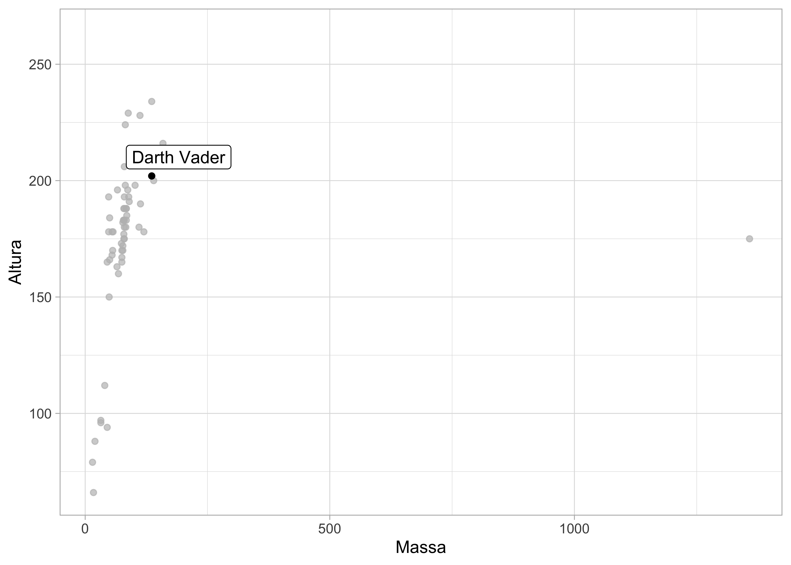

Experimentando o Quarto
Quarto
O Quarto é a evolução do R Markdown! Explore este arquivo para ver algumas possibilidades :)
Veja também a documentação em: https://quarto.org.
Exemplos com código em R
Você já conhece o pacote dados?
Rows: 87
Columns: 14
$ nome <chr> "Luke Skywalker", "C-3PO", "R2-D2", "Darth Vader", "Le…
$ altura <int> 172, 167, 96, 202, 150, 178, 165, 97, 183, 182, 188, 1…
$ massa <dbl> 77.0, 75.0, 32.0, 136.0, 49.0, 120.0, 75.0, 32.0, 84.0…
$ cor_do_cabelo <chr> "Loiro", NA, NA, "Nenhum", "Castanho", "Castanho, Cinz…
$ cor_da_pele <chr> "Branca clara", "Ouro", "Branca, Azul", "Branca", "Cla…
$ cor_dos_olhos <chr> "Azul", "Amarelo", "Vermelho", "Amarelo", "Castanho", …
$ ano_nascimento <dbl> 19.0, 112.0, 33.0, 41.9, 19.0, 52.0, 47.0, NA, 24.0, 5…
$ sexo_biologico <chr> "Macho", "Nenhum", "Nenhum", "Macho", "Fêmea", "Macho"…
$ genero <chr> "Masculino", "Masculino", "Masculino", "Masculino", "F…
$ planeta_natal <chr> "Tatooine", "Tatooine", "Naboo", "Tatooine", "Alderaan…
$ especie <chr> "Humano", "Droide", "Droide", "Humano", "Humano", "Hum…
$ filmes <list> <"The Empire Strikes Back", "Revenge of the Sith", "R…
$ veiculos <list> <"Snowspeeder", "Imperial Speeder Bike">, <>, <>, <>,…
$ naves_espaciais <list> <"X-wing", "Imperial shuttle">, <>, <>, "TIE Advanced…A base dados::dados_starwars apresenta informações sobre 87 personagens da série de filmes Star Wars ⭐

Gráfico com ggplot2
dados_starwars %>%
ggplot() +
geom_point(aes(x = massa, y = altura)) +
theme_light() +
gghighlight::gghighlight(nome == "Darth Vader", label_key = nome) +
labs(x = "Massa", y = "Altura")